* Note : For best UI open this on Larger Screen like desktop
Famous Footballers
To-Do List
Notes App
Color Picker

ACCORDION
What is HTML?
HTML stands for HyperText Markup Language. It is the standard markup language for creating web pages
and web applications. HTML describes the structure of a web page semantically and originally
included cues for the appearance of the document.
What is CSS?
CSS stands for Cascading Style Sheets. It is a style sheet language used for describing the
presentation of a document written in HTML or XML. CSS describes how elements should be rendered on
screen, on paper, in speech, or on other media.
What is JavaScript?
JavaScript is a high-level, often just-in-time compiled, and multi-paradigm programming language. It
has curly-bracket syntax, dynamic typing, prototype-based object-orientation, and first-class
functions. It is one of the core technologies of the World Wide Web, alongside HTML and CSS.
What is responsive web design?
Responsive web design is an approach to web design that makes web pages render well on a variety of
devices and window or screen sizes. Recent work also considers the viewer proximity as part of the
viewing context as an extension for RWD.
What are front-end and back-end development?
Front-end development refers to the part of web development that involves creating the user
interface and user experience aspects of a website or application. It primarily deals with HTML,
CSS, and JavaScript.
Back-end development involves the server-side development. It focuses on databases, scripting,
and
website architecture. It contains behind-the-scenes activities that occur when performing any
action
on a website.
*Note:
Accordion is Only Visible on Bigger Screens like desktop.
*